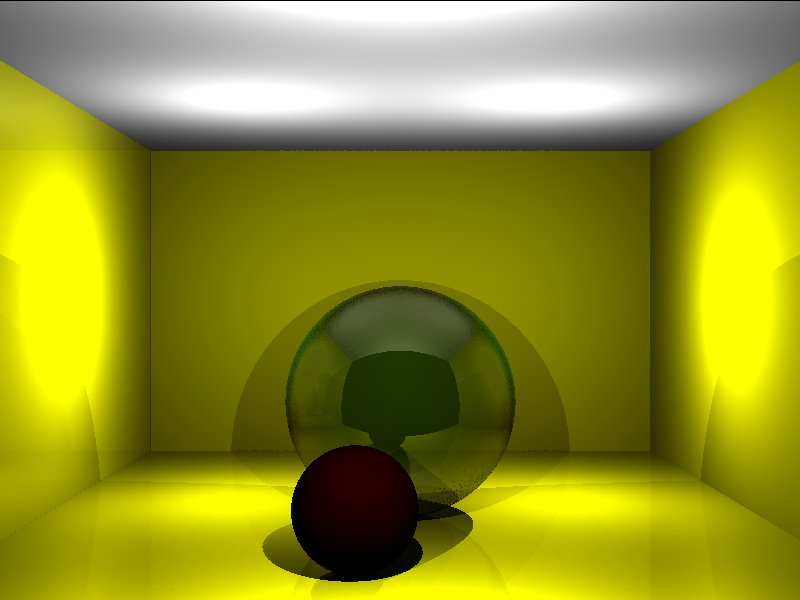
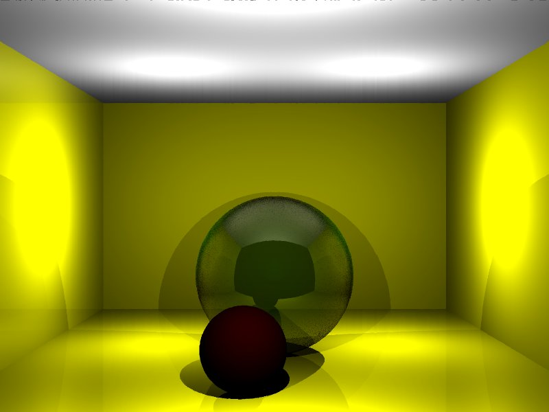

Tanmay Randhavane
110050010
Alok Yadav
110050043
Implement a simple ray recursive tracer along with affine transformations of objects, the Phong Illumination Model with point lights, shadows and uniform super-sampling for anti-aliasing.
color : It is used to define the color of an object.
point : Class to represent a point in space.
ray : Class to represent a ray in space.
function : Class containing basic functions like dot product, cross product, vector matrix multiplication.
rayIntersection:
This class contains methods to calculate refracted and reflected rays.
getReflectedRay() method takes
a point , an incident ray and the normal at that point and gives the reflected rays at that point.
getRefractedRay() method take a point, an incident ray, the normal and refractive indices of the two surfaces and gives refracted ray.
Sphere : Class to represent sphere objects. It contains methods to give the intersection point of any ray with the sphere. Also, it contains a method to compute normal at any point on the sphere.
Triangle : Class to represent triangle objects. It contains methods to give the intersection point of any ray with the triangle. Also, it contains a method to compute normal at any point on the triangle.
raytracer : This class contains main implementation methods for raytracing.


Description of the scene file
| Object | Specification Format |
|---|---|
| Eye Position | E, x, y, z |
| Up vector | VUP, x, y, z |
| Normal to viewing plane | N, x, y, z |
| Window center | R, x, y, z |
| Window | W, right,left, top,bottom |
| Light | L, x,y,z,Red light Intesity. Green light Intesity,Blue light Intesity |
| Sphere | S, radius, center_x1,center_y1,center_z1, r,g,b, specular/diffuse, kd,ks,kt,kr |
| Triangle | T, x1,y1,z1, x2,y2,z2, x3,y3,z3, r,g,b, specular/diffuse, kd,ks,kt,kr |
Commands